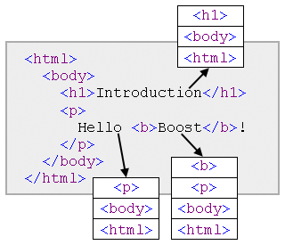

Boost.Flyweight ExamplesBoost.Flyweight Examples
Boost.Flyweight ExamplesBoost.Flyweight ExamplesSee source code.
Dummy program showing the basic capabilities of flyweight
explained at the tutorial.
See source code.
The program simulates the scenario described at the tutorial section on
key-value flyweights: The class
texture manages some texture rendering data stored in
a file whose location is given at construction time. The program
handles large quantities of objects of this class by encapsulating
them into key-value flyweights keyed by filename. Observe how the
execution of the program results in no extra constructions or copies
of objects of type texture except those absolutely
necessary.
See source code.
The composite design pattern revolves about the idea that a tree data structure can be easily constructed and manipulated by defining the tree node type polymorphically so that either is a leaf node or else contains a list of pointers to their child nodes. This way, a tree is the exact same entity as its root node, which allows for very simple recursive tree-handling algorithms. Large composite trees having a high degree of duplication of nodes and subtrees (as for instance those generated when parsing a computer program) are a natural fit for the flyweight idiom: simply turning the node type into a flyweight automatically deals with duplication at the node and subtree level.
The example program parses Lisp-like lists of the form
(a1 ... an) where each
ai is a terminal string or a list. The parsed
data structure is a composite type defined using Boost.Flyweight in conjunction
with the recursive facilities of
Boost.Variant. So, given the list
(= (tan (+ x y))(/ (+ (tan x)(tan y))(- 1 (* (tan x)(tan y)))))
the resulting data structure implicitly detects the duplicated
occurrences of +, x, y,
tan, (tan x) and (tan y).
See source code.
A classic example of application of the flyweight pattern is that of a text processor which handles characters with rich formatting information, like font type, size, color and special options (boldness, italics, etc.) Coding the formatting information of each character takes considerable space, but, given the high degree of repetition typical in a document, maintaining formatted characters as flyweight objects drastically reduces memory consumption.
The example program parses, manipulates and stores HTML documents following flyweight-based representation techniques. Given the hierarchical nature of HTML markup, a crude approximation to the formatting options of a given character is just to equate them with the stack of tag contexts to which the character belongs, as the figure shows.

Fig. 1: Formatting contexts of characters in an HTML document.
HTML documents are then parsed as arrays of (character, format) pairs, where the format is the tag context as described above. The very high degree of redundancy in formatting information is taken care of by the use of Boost.Flyweight. This character-based representation makes it easy to manipulate the document: transposition and elimination of portions of text are trivial operations. As an example, the program reverses the text occupying the central portion of the document. Saving the result in HTML reduces to traversing the array of formatted characters and emitting opening/closing HTML tags as the context of adjacent characters varies.
For the sake of brevity, the HTML parsing capabilities of this program are coarse: for instance, elements without end-tag (like <BR>), character enconding and HTML entities (e.g. "©" for ©) are not properly handled. Improving the parsing code is left as an exercise to the reader.
See source code.
Memoization
is an optimization technique consisting in caching
the results of a computation for later reuse; this can dramatically
improve performance when calculating recursive numerical functions,
for instance. Key-value flyweights
can be used to implement memoization for a numerical function f
by modeling a memoized invocation of the function as a value of
type flyweight<key_value<int,compute_f> >, where
compute_f is a type that does the computation of
f(n) at its compute_f::compute_f(int) constructor.
For instance, the Fibonacci
numbers can be computed with memoization like this:
typedef flyweight<key_value<int,compute_fibonacci>,no_tracking> fibonacci; struct compute_fibonacci { compute_fibonacci(int n): result(n==0?0:n==1?1:fibonacci(n-2).get()+fibonacci(n-1).get()) {} operator int()const{return result;} int result; };
The no_tracking
policy is used so that the memoized computations persist for future
use throughout the program. The provided program develops this example in full.
See source code.
This program measures the time and space performances of a simple
string type against several differently configured flyweight
instantations as used in a conventional task involving parsing a file and
doing some manipulations on the parsed text.
Memory consumption is computed by instrumenting the relevant
components (the string type itself, flyweight factories, etc.) with custom
allocators that keep track of the allocations and deallocations requested.
The program has been used to produce the experimental results given
at the performance section.
See source code.
The example shows how to write and use a custom factory class. This "verbose" factory outputs messages tracing the invocations of its public interface by Boost.Flyweight, so helping the user visualize factory usage patterns.
Revised December 2nd 2008
© Copyright 2006-2008 Joaquín M López Muñoz. Distributed under the Boost Software License, Version 1.0. (See accompanying file LICENSE_1_0.txt or copy at http://www.boost.org/LICENSE_1_0.txt)